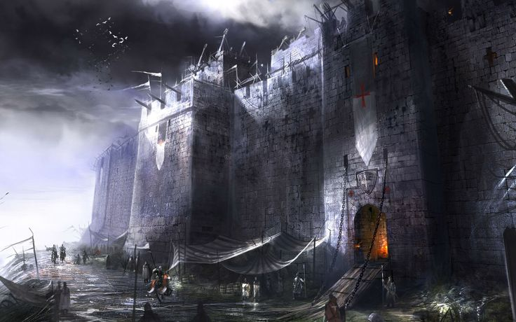

<div class="contenedorinicio">
  <div class="div-parrafo">
    <p class="parrafo-introduccion">
      En un bosque encantado, oculto entre la espesura, se alza un misterioso
      castillo en ruinas que resguarda un objeto de increíble poder:
      <strong>la Corona de las Sombras</strong>
      , capaz de conceder un deseo prohibido a quien logre posarla sobre su cabeza.<br><br>
      Atraídos por la leyenda, vosotros, audaces aventureros emprenderéis un
      peligroso viaje hacia sus profundidades. La bruja de enigmáticos
      poderes y el astuto ladrón de corazón noble, formarán un equipo excepcional
      para enfrentar los desafíos que aguardan en las sombrías mazmorras del
      castillo.<br><br>
    Dentro de sus muros, los intrépidos exploradores se toparán con
      trampas mortales, criaturas fantásticas y enigmas milenarios. El tiempo
      parecerá perderse en aquel lugar embrujado, y la amistad entre ellos se
      convertirá en su mayor fortaleza para seguir adelante.
      <br><br>
       Sin embargo, antes
      de alcanzar la Corona de las Sombras, una advertencia resonará en la
      cámara final: solo podrán tomarla si su deseo es puro y desinteresado,
      pues su poder conlleva un precio peligroso. En ese momento crucial,
      deberán decidir sabiamente y, unidos, enfrentarán las consecuencias de su
      elección en esta emocionante aventura.
    </p>
    <button class="boton-jugar" (click)="primeraPantalla()">Entrar al castillo</button>
  </div>
  
</div>
